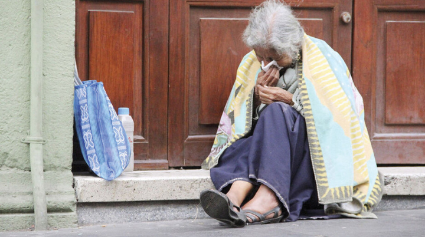

El abandono no siempre significa estar en la calle. Muchos adultos mayores piden limosna o trabajan informalmente porque sus propias familias los obligan a contribuir económicamente. Algunos prefieren huir del maltrato doméstico y refugiarse en la calle, donde sienten mayor libertad. Si bien la familia es la primera responsable del cuidado, el Estado también debe garantizar su protección. Sin embargo, la falta de información o de acción institucional provoca que muchos adultos mayores desconozcan sus derechos y vivan en condiciones de vulnerabilidad.
